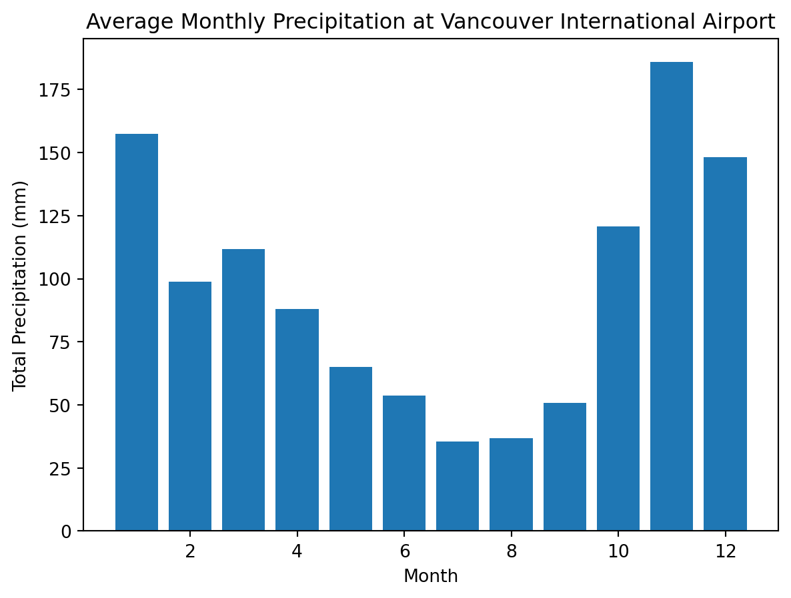

| Constant | Symbol | Value | Units |
|---|---|---|---|
| Heat Capacity of Air | \(C_a\) | 0.001 | \(MJ m^{-3} K^{-1}\) |
| Heat Capacity of Water | \(C_w\) | 4.2 | \(MJ m^{-3} K^{-1}\) |
| Heat Capacity of Organic Soil | \(C_o\) | 2.5 | \(MJ m^{-3} K^{-1}\) |
| Heat Capacity of Mineral Soil | \(C_a\) | 2 | \(MJ m^{-3} K^{-1}\) |
| Solar Constant | \(I_0\) | 1361 | \(W m^{-2}\) |
| Ideal Gas Constant | \(R\) | 8.31446 | \(Pa\ m^3\ mol^{-1} K ^{-1}\) |
| Molar Mass of Air | \(M\) | 0.028964 | \(kg mol^{-1}\) |
| Dry Adiabatic Lapse Rate | \(DALR\) | 0.01 | \(K m^{-1}\) |
Final Exam
Written Portion
Problem Question
| Symbol | Name | Units |
|---|---|---|
| \(R_n\) | Net Radiation | \(W m^{-2}\) |
| \(LE\) | Latent Heat Flux | \(W m^{-2}\) |
| \(H\) | Sensible Heat Flux | \(W m^{-2}\) |
| \(H_g\) | Ground Heat Flux | \(W m^{-2}\) |
| \(Ta_z\) | Air Temperature at the Height (z in m) Above the Surface | \(^{\circ}C\) |
| \(RH_z\) | Relative Humidity at the Height (z in m) Above the Surface | % |
| \(T_0\) | Temperature at the Ground Surface | \(^{\circ}C\) |
| \(Ts_z\) | Air Temperature at the Depth (z in m) Below the Surface | \(^{\circ}C\) |
| \(\Theta_o\) | Volumetric Fraction of Organic Matter | % |
| \(\Theta_w\) | Volumetric Fraction of Liquid Fresh Water | % |
| \(P_a\) | Air Pressure | \(kPa\) |
| \(rho_a\) | Density of Air | \(g m^{-3}\) |
| \(rho_v\) | Partial Density of Water Vapor (aka. Absolute Humidity) | \(g m^{-3}\) |
| \(L_v\) | Latent heat of vaporization | \(J g^{-1}\) |
| \(Fc\) | Carbon Dioxide Flux | \(\mu mol m^{-2} s^{-1}\) |
| \(\overline{u}\) | Mean Wind Speed | \(m s^{-1}\) |
| DOY | \(R_n\) | \(LE\) | \(H\) | \(Ta_{2.0}\) | \(Ta_{0.2}\) | \(RH_{2.0}\) | Fc | \(\overline{u}_{2.0}\) |
|---|---|---|---|---|---|---|---|---|
| 150 | 665 | 284 | 214 | 25.1 | 27.1 | 56.5 | -0.94 | 0.11 |
| 151 | 690 | 299 | 229 | 25.3 | 27.4 | 59 | -0.84 | 0.14 |
| 152 | 668 | 286 | 216 | 25.1 | 27.2 | 56.8 | -0.93 | 0.12 |
| 153 | 689 | 299 | 229 | 25.3 | 27.4 | 58.9 | -0.84 | 0.14 |
| 154 | 678 | 292 | 222 | 25.2 | 27.3 | 57.8 | -0.89 | 0.13 |
| 155 | 663 | 283 | 213 | 25.1 | 27.1 | 56.3 | -0.95 | 0.11 |
| 235 | 615 | 134 | 324 | 20.1 | 22.1 | 46.5 | 1.06 | 0.31 |
| 236 | 640 | 149 | 339 | 20.2 | 22.3 | 49 | 1.16 | 0.34 |
| 237 | 618 | 136 | 326 | 20.1 | 22.1 | 46.8 | 1.07 | 0.32 |
| 238 | 639 | 149 | 339 | 20.2 | 22.3 | 48.9 | 1.16 | 0.34 |
| 239 | 628 | 142 | 332 | 20.2 | 22.2 | 47.8 | 1.11 | 0.33 |
| 240 | 613 | 133 | 323 | 20.1 | 22.1 | 46.3 | 1.05 | 0.31 |
You have randomly been assigned observations of conditions from Burns Bog, on two separate days which listed in Table 3.
Given the conditions for both of your assigned observations, do you expect the stable, neutral, or unstable atmospheric conditions? Why?
Calculate the eddy diffusivity of sensible heat flux for both of your assigned observations.
Calculate \(\overline{w^{\prime}\rho_v^{\prime}}\) for both of your assigned observations.
Calculate the total mass of \(CO_2\) uptake/emission (in \(\rm{mg \ m}^{-2}\)) over both of your assigned observations. Was the site was a source or sink for atmospheric \(CO_2\) during each period? Speculate on which component of the carbon balance (Ecosystem Respiration or Gross Primary Productivity) was greater for each period.
Estimate the magnitude of ground heat flux (\(H_g\)) for both of your assigned observations. You can assume that any storage terms not listed in the table are negligible.
Calculate the Bowen Ratio (\(\beta\)) for both of your assigned observations. Discuss what the difference in \(\beta\) between your two days means, and speculate on the underlying reason for the difference between the two observations. For context, you can refer to the image below, which shows a 30-year climate normals for a near-by site.
Text(0.5, 1.0, 'Average Monthly Precipitation at Vancouver International Airport')

Short Answers
- Briefly explain the concept of Reynolds decomposition? Then use it to calculate the \(\overline{u^{\prime}w^{\prime}}\) and \(u_*\) for the following data set
| \(u_a\) | \(w_a\) | \(u_b\) | \(w_b\) | \(u_c\) | \(w_c\) | \(u_d\) | \(w_d\) |
|---|---|---|---|---|---|---|---|
| 1 | 0 | 2 | 0 | 3 | 0 | 4 | 0 |
| 0 | 0.1 | 0 | 0.2 | 0 | 0.3 | 0 | 0.4 |
| 1 | 0 | 2 | 0 | 3 | 0 | 4 | 0 |
| 2 | -0.1 | 4 | -0.2 | 6 | -0.3 | 8 | -0.4 |
| 1 | 0 | 2 | 0 | 3 | 0 | 4 | 0 |
| 0 | 0 | 0 | 0 | 0 | 0 | 0 | 0 |
| 0.5 | -0.25 | 1 | -0.5 | 1.5 | -0.75 | 2 | -1 |
| 1.25 | 0.25 | 2.5 | 0.5 | 3.75 | 0.75 | 5 | 1 |
Briefly explain what factors influence evapotranspiration from a vegetated surface?
Briefly explain what factors influence net all-wave radiation (\(R_n\)) at the earth’s surface?
Fill in the blanks
Negative sensible heat flux is more likely to occur during the _____ than during the _____.
Positive _____ heat flux indicates that _____ is occurring at the surface.
A(n) _____ process is on where temperature changes due to compression/expansion of a gas, ____ the exchange of energy with the surrounding environment.
For any given soil, it’s _____ increases linearly as a function of volumetric _____ content.
Multiple Choice
- A temperature inversion in the atmosphere near the Earth’s surface would result in
- Negative (downward) sensible heat flux
- Positive (downward) sensible heat flux
- Positive (upward) sensible heat flux
- Suppression of turbulence
- Production of turbulence
- This is the time of year when the earth is closest to the sun
- Perihelion
- Aphelion
- Summer Solstice
- Winter Solstice
- Every day, Earth is always the same distance from the sun
- Obukhov length (\(L\)) is a measure of atmospheric:
- Humidity
- Stability
- Temperature
- Kinetic Energy
- Energy Density
- Which surface would you expect to have the greatest aerodynamic roughness length (\(z_0\))
- Ice
- Water
- Bare Soil
- Grassland
- Forest
- Which of the following locations would you expect to have the highest average latent heat flux over an entire year?
- At the Equator in the Pacific Ocean
- Sahara Desert
- An irrigated cotton farm in California
- Lake Superior
- A temperate rain forest in British Columbia
- This type of flow most common on calm, clear nights with weak winds
- Laminar
- Adiabatic
- Turbulent
- Kinetic
- Stable
- Mechanical turbulence increases with increasing:
- Mean wind speeds
- Height above the surface
- Latent heat flux
- Surface roughness
- Ground heat flux
True/False
Positive ground heat flux (\(H_g\)) indicates that heat energy is moving from the soil into the atmosphere.
Days with strong winds and high sensible heat flux are the optimal conditions for producing wind power.
- True
- False
- Typically, on a hot and sunny day in mid-summer, we expect \(\overline{w}>0 \ \rm{m s}^{-1}\)
- True
- False
- \(NPP \approx -NEE\), therefore NEE and NPP are synonymous.
- True
- False
- Soil temperatures tend to become more variable with increasing depth.
- True
- False
- Select true for 5 free points:
- True
- False
Calculations
import numpy as np
import pandas as pd
seed = 69
N = 3
np.random.seed(seed)
SW_in = np.round(np.random.rand(N)*375)
Albedo = np.round(np.random.rand(N)*.9,3)
# SW_out = np.round(np.random.rand(N)*125,3)
epsilon = np.round(np.random.rand(N)*.065+.9,3)
np.random.seed(seed)
LW_in = np.round(np.random.rand(N)*20+100)- Given \(SW_\downarrow\) of array([111., 303., 131.]) and \(LW\downarrow\) is array([106., 116., 107.]) \(W m^{-2}\), with a surface albedo \(\alpha\) of array([0.71 , 0.505, 0.228]) and a surface emissivity (\(\epsilon_{o,LW}\)) of array([0.907, 0.904, 0.944]), estimate net radiation \(R_n\)?
a=epsilon
alpha = 1-a
print('alpha = ', alpha)
LW_out = LW_in*alpha
SW_out = SW_in*alpha
R_n = SW_in-SW_out+LW_in-LW_out
print(R_n)alpha = [0.093 0.096 0.056]
[196.819 378.776 224.672]import numpy as np
k = 0.41
R = 40 # m
E = 0.35 # %
z = 100 # m
z0 = 0.25 # m
u_star = 0.75 # m/s
rho = 1.22 # kg m-3
u_bar = u_star/k*np.log(z/z0)
U = np.pi/2*rho*E*(R**2)*(u_bar**3)
print(f'{U*1e-3:.1f} kW')1412.9 kW- Estimate the power generation (in kilowatts) of a wind turbine with R = 40 m, z = 100 m and E = 0.35% under the following conditions: Neutral stability, \(u_∗\) = 0.75 m/s, z0 = 0.25 m, \(\rho\) = 1.22 \(\rm{kg m^{-3}}\).
import numpy as np
k = 0.41
R = 25 # m
E = 0.35 # %
z = 60 # m
z0 = 0.2 # m
u_star = 0.85 # m/s
rho = 1.22 # kg m-3
u_bar = u_star/k*np.log(z/z0)
U = np.pi/2*rho*E*(R**2)*(u_bar**3)
print(f'{U*1e-3:.1f} kW')693.1 kW- Estimate the power generation (in kilowatts) of a wind turbine with R = 25 m, z = 60 m and E = 0.35% under the following conditions: Neutral stability, \(u_∗\) = 0.85 m/s, z0 = 0.2 m, \(\rho\) = 1.22 \(\rm{kg m^{-3}}\).